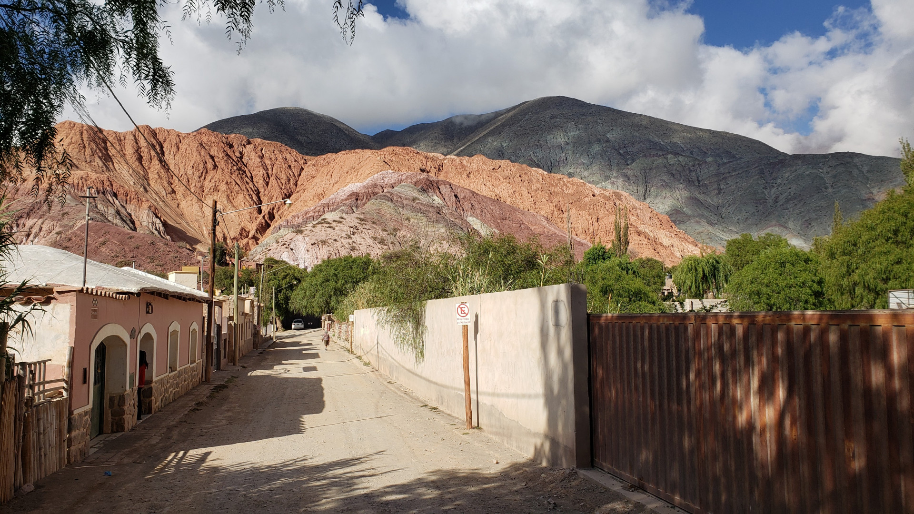

Tilcara, Purmamarca, Salta y Humahuaca 🇦🇷

En el norte argentino encontré una combinación perfecta de paisajes, historia y cultura. Empecé por Salta, luego visité Tilcara y Purmamarca, con sus cerros multicolores.
Finalmente llegué a Humahuaca, un pueblo lleno de tradiciones y música. Probé empanadas caseras y disfruté la calidez de su gente. Cada rincón tiene su magia.